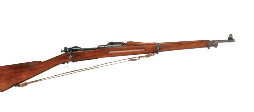
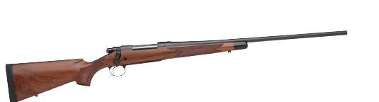
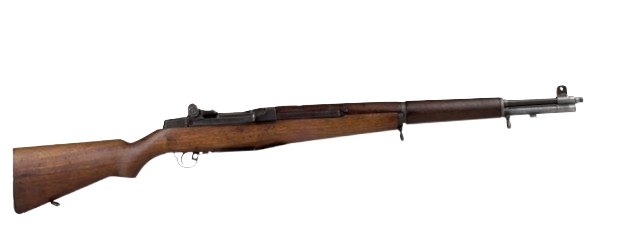
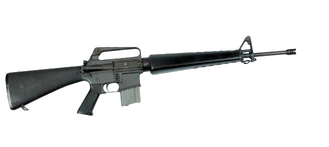
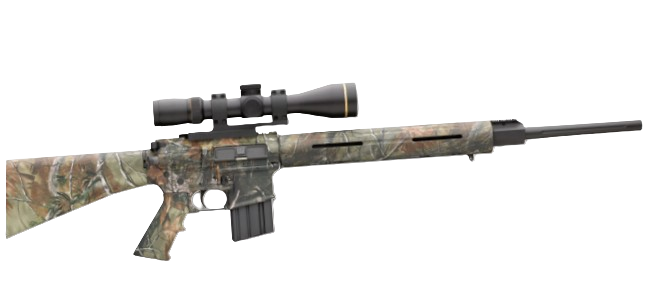

Gun Timeline


1903 - WW I ERA
1903 Springfield Rifle Adopted
1903 Springfield bolt-action rifle adopted for use by U.S. Army in World War I. Introduces .30-06 cartridge.

1920s - POST WW I ERA
Bolt-Action Rifles Become Popular
Bolt-action hunting rifles became popular after World War I. The .30-06 continues today as one of the most popular big-game calibers in the United States.

1940s - WW II ERA
First Semi-Automatic Rifle
First semi-automatic U.S. service rifle, the Garand, is first used in World War II.

1960s - VIETNAM WAR ERA
M-16 Becomes Service Rifle
M-16 becomes service rifle, first sees combat in Vietnam War. Updated versions continue as current U.S. service rifle.

2020s - TODAY
AR Rifles for Hunting
AR (Armalite)-platform rifles are semi-automatic versions that look like their military counterparts. Now offered with hunt-specific features, these rifles are popular for varmint and big-game hunting.